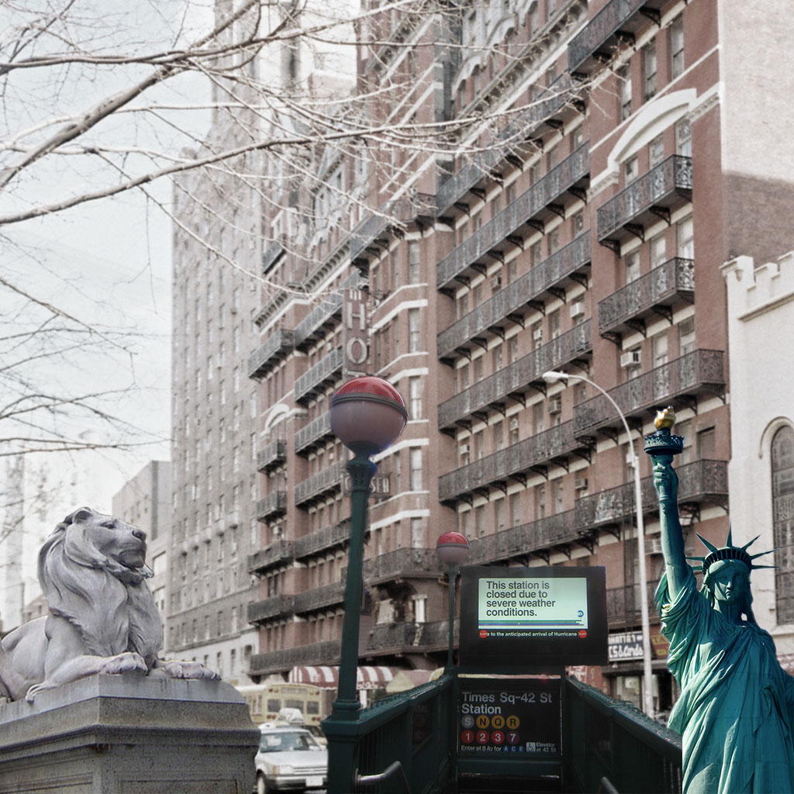

David lives in New York City nearby Bryant Park where he hangs out a lot and creates most of his funny experiences. My character starts as an idea of putting together some of the things I like from my parents and siblings in this imaginary person. This character is special because he has the good qualities of my parents, he is helpful, a hard worker, and patient. He also has some of the weirdness of my siblings. He is funny, he enjoys outside activities like sports, parties, and meetings with his friends.
